Abstract
We propose a novel method, StyLitGAN, for relighting and resurfacing generated images in the absence of labeled data. Our approach generates images with realistic lighting effects, including cast shadows, soft shadows, inter-reflections, and glossy effects, without the need for paired or CGI data.
StyLitGAN uses an intrinsic image method to decompose an image, followed by a search of the latent space of a pre-trained StyleGAN to identify a set of directions. By prompting the model to fix one component (e.g., albedo) and vary another (e.g., shading), we generate relighted images by adding the identified directions to the latent style codes. Quantitative metrics of change in albedo and lighting diversity allow us to choose effective directions using a forward selection process. Qualitative evaluation confirms the effectiveness of our method.
Latent Interpolation Videos
User Controllable Relighting
| Scaling single lighting direction | Two lighting direction composition |
Interactive Relighting
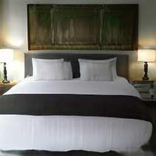
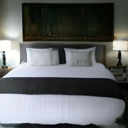
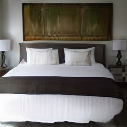
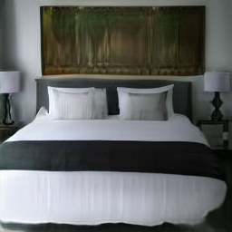
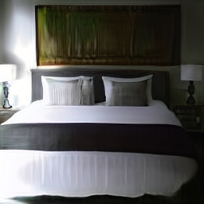
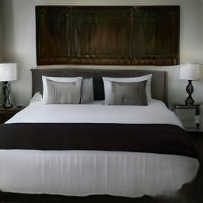
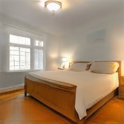
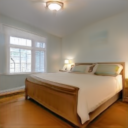
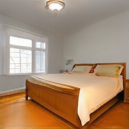
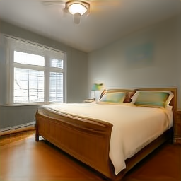
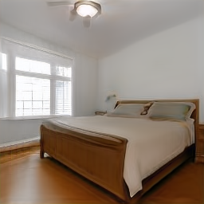
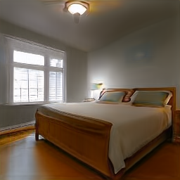
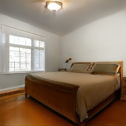
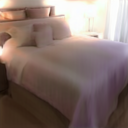
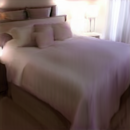
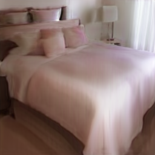
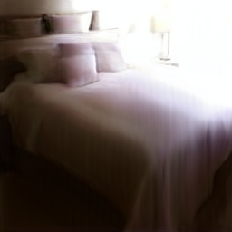
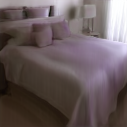
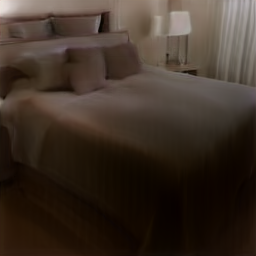
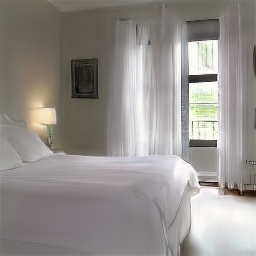
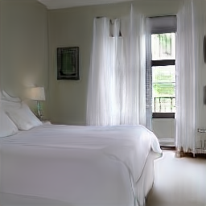
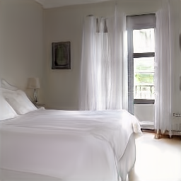
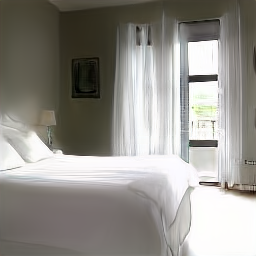
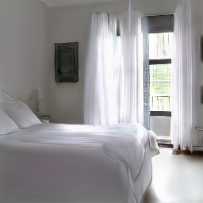
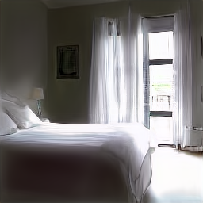
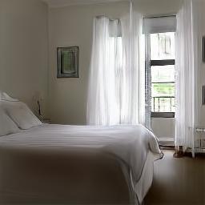
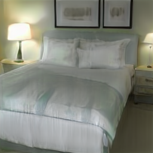
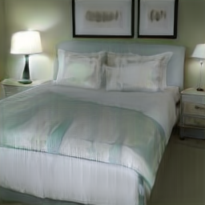
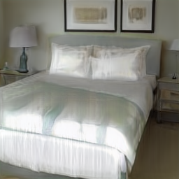
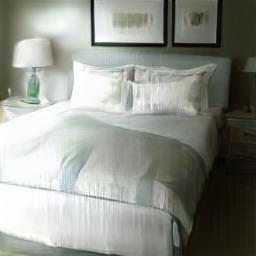
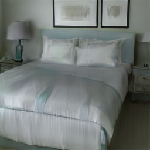
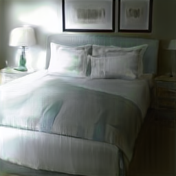
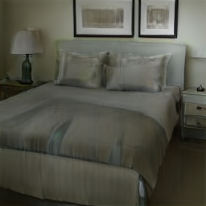
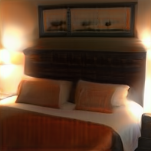
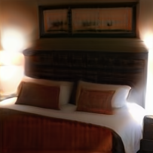
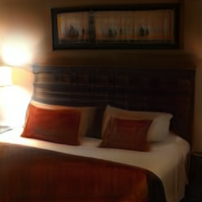
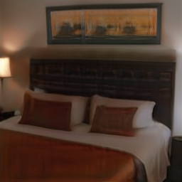
Choice of Decomposition Matters
| SOTA Decomposition (Better WHDR Score) | Not SOTA Decomposition (Worse WHDR Score) |
| Unstable and large geometry shifts | Stable and small geometry shifts |
Real Image Relighting with Make It So
Paper
StylitGAN: Prompting StyleGAN to Generate New Illumination Conditions
Anand Bhattad, D.A. Forsyth
@InProceedings{bhattad2023StylitGAN,
title = {StylitGAN: Prompting StyleGAN to Generate New Illumination Conditions},
author = {Bhattad, Anand and Forsyth, D.A.},
booktitle = {arXiv},
year = {2023},
}Code
[GitHub]
Acknowledgements
We thank Aniruddha Kembhavi, Derek Hoiem, Min Jin Chong, and Shenlong Wang for their feedback and suggestions. This material is based upon work supported by the National Science Foundation under Grant No. 2106825 and by a gift from the Boeing Corporation. This webpage template was adpated from some colorful folks.